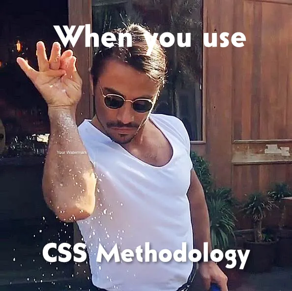
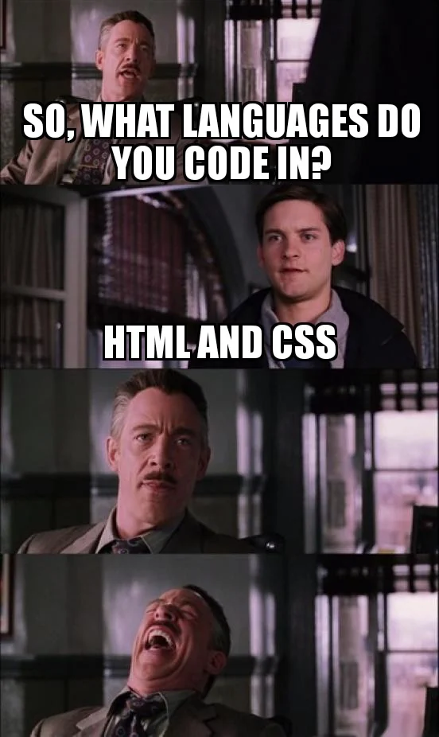

@layer
.menu a { color: #333; }
.header .menu li a { color: blue; }
#nav .menu li a { color: green; }
.footer a { color: #333 !important; }
.menu a.link { color: red !important; }
Кожен новий стиль «перебиває» попередній — специфічність тільки росте, а
!important множиться.

.header .menu li a → #nav .menu li a →
!important → …
CSS-методологія — набір правил і домовленостей щодо іменування класів та організації файлів стилів.
| Перевага | Пояснення |
|---|---|
| Уникнення конфліктів | Стилі не перезаписують один одного |
| Читабельність | Структура зрозуміла з назви класу |
| Повторне використання | Компоненти переносяться між сторінками й проєктами |
| Масштабованість | Нові компоненти додаються без страху щось зламати |
| Командна робота | Усі пишуть CSS однаково |
BEM — блоки, елементи, модифікатори
OOCSS — перевикористовувані «об'єкти»
Atomic CSS — один клас = одна властивість
SMACSS — 5 категорій стилів
ITCSS — шари від загального до конкретного
(+ нативний @layer у CSS)
Методології не взаємовиключні: типова комбінація — ITCSS для структури файлів + BEM для іменування.
Найпопулярніша методологія іменування (2009). Інтерфейс ділиться на незалежні блоки.
block
block__element
block--modifier
block__element--modifier
.search-form
.search-form__input
.search-form--compact
.search-form__button--disabled
Слова всередині назви — через дефіс: search-form. Два підкреслення __ —
елемент, два дефіси -- — модифікатор.
| Сутність | Що це | Питання | Приклади |
|---|---|---|---|
| Block | Незалежний компонент, має сенс сам по собі | «Що це?» | header, menu, card |
| Element | Частина блоку, окремо не існує | «Що це?» | menu__item, card__title |
| Modifier | Стан, вигляд або поведінка | «Який? Як поводиться?» | button--disabled, card--featured |
Назви — за змістом, а не за виглядом: ✅ button--danger ❌ button--red ❌ big-block
<article class="card card--featured">
<img class="card__img" src="pug.png" alt="Pug">
<h3 class="card__title">Pug</h3>
<p class="card__text">Шаблонізатор для HTML</p>
<a class="card__btn button button--primary" href="#">Детальніше</a>
</article>
.card { padding: 16px; border-radius: 12px; }
.card--featured { border: 2px solid gold; }
.card__img { width: 100%; }
.card__title { font-size: 1.25rem; }
card__body__title →
card__title. Елемент належить блоку, а не іншому елементу.
class="button button--primary".
Один HTML-вузол може бути одночасно елементом одного блоку і самостійним блоком.
<a class="card__btn button button--primary" href="#">Детальніше</a>
/* блок button: як виглядає кнопка будь-де */
.button { padding: 8px 16px; border-radius: 6px; }
.button--primary { background: #4b86c2; color: #fff; }
/* елемент card__btn: де кнопка стоїть усередині картки */
.card__btn { margin-top: auto; align-self: flex-start; }
.card {
padding: 16px;
&__title { font-size: 1.25rem; }
&__img { width: 100%; }
&--featured {
border: 2px solid gold;
}
}
/* результат компіляції */
.card { padding: 16px; }
.card__title {
font-size: 1.25rem;
}
.card__img { width: 100%; }
.card--featured {
border: 2px solid gold;
}
Один блок = один файл: components/_card.scss. & склеює назву, але
не створює вкладеності.
<nav class="Menu">
<ul class="menu__list">
<li class="menu__list__item">
<a class="menu__link--active" href="/">Головна</a>
</li>
</ul>
<button class="menu__btn-blue big">Увійти</button>
</nav>
Скільки порушень BEM ви бачите? Як має бути правильно?
| ✅ Переваги | ❌ Недоліки |
|---|---|
| Ідеально для компонентного підходу | Довгі назви класів |
| Структура зрозуміла з HTML | Потрібна дисципліна команди |
| Плоска специфічність | Спочатку здається «багатослівним» |
| Блоки легко переносити й видаляти | Не регулює структуру файлів |
Object-Oriented CSS — Nicole Sullivan, 2008. Ідея з ООП: перевикористовувані CSS-«об'єкти».
/* ❌ усе змішано, дублювання */
.btn-login {
padding: 8px 16px;
border-radius: 4px;
background: blue;
}
.btn-delete {
padding: 8px 16px;
border-radius: 4px;
background: red;
}
/* ✅ structure + skin */
.btn {
padding: 8px 16px;
border-radius: 4px;
}
.skin-primary { background: blue; }
.skin-danger { background: red; }
<button class="btn skin-danger">
/* ❌ залежить від місця */
.sidebar h3 {
font-size: 18px;
}
.footer h3 {
font-size: 18px;
}
/* ✅ виглядає однаково будь-де */
.heading-small {
font-size: 18px;
}
| ✅ Переваги | ❌ Недоліки |
|---|---|
| Гнучкі, перевикористовувані компоненти, менше дублювання | Багато класів в HTML, немає правил іменування → «зоопарк» класів |
Scalable and Modular Architecture for CSS — Jonathan Snook, 2011.
| Категорія | Що містить | Приклад |
|---|---|---|
| Base | Нормалізація, стилі за замовчуванням — лише теги | body, a, h1 { … } |
| Layout | Великі секції сторінки, префікс l- |
.l-header, .l-sidebar |
| Module | Перевикористовувані компоненти | .nav, .card |
| State | Стани, префікси is-, has- |
.is-active, .has-error |
| Theme | Тема оформлення | theme-dark.css |
<header class="l-header">
<nav class="nav">
<a class="nav__link is-active" href="#">Головна</a>
</nav>
</header>
.nav .is-active) — специфічність знову росте.
is- / has- широко використовують разом із BEM,
особливо для станів, які перемикає JavaScript.
Inverted Triangle CSS — Harry Roberts.
Згори вниз:
Settings і Tools не генерують жодного CSS.
scss/
├── settings/ _colors.scss
├── tools/ _mixins.scss
├── generic/ _reset.scss
├── elements/ _typography.scss
├── objects/ _container.scss
├── components/ _card.scss
│ _button.scss
├── utilities/ _helpers.scss
└── main.scss
// main.scss — порядок = шари
@use 'settings/colors';
@use 'tools/mixins';
@use 'generic/reset';
@use 'elements/typography';
@use 'objects/container';
@use 'components/card';
@use 'components/button';
@use 'utilities/helpers';
Кожен наступний шар лише доповнює попередні — правила перекриваються природним шляхом,
без !important-воєн.
@layer
/* оголошуємо порядок шарів один раз */
@layer reset, base, components, utilities;
@layer components {
#promo .card .title { color: navy; } /* (1,2,0) */
}
@layer utilities {
.text-red { color: red; } /* (0,1,0) — але перемагає! */
}
Шар, оголошений пізніше, перемагає незалежно від специфічності. Підтримка — усі сучасні браузери (з 2022).
@layer: як браузер обирає переможцяКаскад перевіряє критерії по черзі — наступний лише тоді, коли попередній дав нічию:
!important@layer) ← новеТобто шари стоять вище за специфічність: порівнювати селектори з різних шарів навіть не доводиться.
Три правила, які варто запам'ятати:
!important порядок інвертується: важливе правило з раннього шару
сильніше за важливе з пізнього.
@layer: стилі поза шарами та !important
@layer base, components;
@layer components {
.btn { color: white; }
}
/* поза шаром — перемагає */
a { color: blue; }
/* <a class="btn"> → blue */
@layer base, components;
@layer base {
a { color: black !important; }
}
@layer components {
.btn { color: red !important; }
}
/* <a class="btn"> → black */
Логіка: ранні шари (reset, base) задають «фундамент», і якщо вони кажуть
!important — пізніші шари не мають права це зламати.
@layer: способи оголошення
/* 1. Лише порядок (інструкція) */
@layer reset, base, components;
/* 2. Блок із правилами */
@layer base {
body { margin: 0; }
}
/* 3. Дописати в той самий шар
(в іншому місці / файлі) */
@layer base {
a { color: inherit; }
}
/* 4. Імпорт файлу одразу в шар */
@import url("reset.css") layer(reset);
/* 5. Анонімний шар — не можна
доповнити пізніше */
@layer {
.tmp { outline: 1px solid red; }
}
/* 6. Імпорт у шар + медіазапит */
@import url("print.css") layer(print) print;
Порядок шарів фіксується при першій появі назви. Тому інструкцію
@layer a, b, c; ставлять на самий початок головного файлу.
/* бібліотеку — у найнижчий шар */
@layer vendor, base, components;
@import url("bootstrap.css")
layer(vendor);
@layer components {
/* (0,1,0) перебиває будь-який
селектор Bootstrap */
.btn { border-radius: 0; }
}
/* вкладені шари */
@layer components {
@layer card, button;
@layer card { .card { … } }
}
/* звернення через крапку */
@layer components.button {
.button { … }
}
Головний практичний виграш: стилі UI-бібліотеки більше не змушують писати
!important чи «прокачувати» специфічність, щоб їх перевизначити.
@layer: повна картина
/* main.css */
@layer generic, elements, objects,
components, utilities;
@import url("generic/reset.css") layer(generic);
@import url("elements/type.css") layer(elements);
@import url("objects/grid.css") layer(objects);
@import url("components/card.css")
layer(components);
@import url("utilities/text.css") layer(utilities);
:root (шар не потрібен).@use.
!important.@layer theme, base, components, utilities.
.flex { display: flex; }
.items-center{ align-items: center; }
.p-4 { padding: 1rem; }
.text-center { text-align: center; }
.bg-white { background: #fff; }
.rounded-lg { border-radius: .5rem; }
Замість «назвати компонент і описати його в CSS» — збираємо вигляд прямо в HTML з готових «атомів».
Найвідоміша реалізація — Tailwind CSS: генерує лише ті утиліти, що реально використані в розмітці.
<div class="flex items-center justify-between p-4 bg-white rounded-lg shadow">
<h3 class="text-lg font-bold text-gray-900">Pug</h3>
<a class="px-4 py-2 bg-blue-500 text-white rounded hover:bg-blue-600 md:px-6">Більше</a>
</div>
| ✅ Переваги | ❌ Недоліки |
|---|---|
| Дуже швидка розробка, не треба вигадувати назви | HTML перевантажений класами |
| CSS майже не росте з розміром проєкту | Важче читати розмітку |
| Немає конфліктів і проблем зі специфічністю | Треба вивчити «словник» утиліт |
| Методологія | Головна ідея | Що регулює | Ключове слово |
|---|---|---|---|
| BEM | Незалежні блоки | Іменування класів | block__elem--mod |
| OOCSS | Перевикористовувані об'єкти | Структура vs оформлення | structure / skin |
| SMACSS | 5 категорій стилів | Файли + префікси | Base … Theme |
| ITCSS | Від загального до конкретного | Порядок і специфічність | перевернута піраміда |
| Atomic | Один клас — одна властивість | Утилітарні класи | .p-4, .flex |
BEM + проста структура:
settings → base → layout → components → utilities
ITCSS (або @layer) + BEM + стани is-*
CSS Modules, scoped-стилі або Tailwind — ізоляцію дає інструмент
BEM обов'язково + SCSS-partials за шарами ITCSS
.card { &:hover { … } }@layer — порядок шарів замість війни специфічності (ідея ITCSS).@scope — обмежує стилі піддеревом DOM:
@scope (.card) { img { … } }.button--danger { --btn-bg: red; }:where() — селектор з нульовою специфічністю, зручний для base-стилів.Інструменти змінюються, а принципи (низька специфічність, незалежні компоненти, передбачуваний порядок) — лишаються.
scss/, js/, images/, fonts/;
index.html, normalize; Git з першого дня; Vite / Gulp.
header, main, section,
footer) + BEM-класи; компоненти — окремі Pug-partials.
box-sizing, кольори/шрифти/breakpoints у
settings.
body, h1–h6, a,
.container.
.card {
display: grid;
gap: 12px;
@media (min-width: 768px) {
grid-template-columns: 1fr 2fr;
}
}
Медіазапити пишемо одразу в компоненті, а не окремим файлом «в кінці».
:focusloading="lazy"<h1>, alt у зображень!importantbox-sizing: border-box:focus, навігація з клавіатуриloading="lazy"block__element--modifier, лише класи, без вкладеності в назвах@layer: від загального до конкретного